Image warping and mosaicing
Computing homographies, warping images, and blending them into seamless mosaics, with warping, resampling, and compositing implemented from scratch. Then automating the whole thing with feature detection, ANMS, feature matching, and RANSAC.
A.1. Shooting and digitizing pictures
Three sets of overlapping images were taken by rotating the camera about a fixed center of projection. These serve as the input pairs for homography estimation and mosaicing.
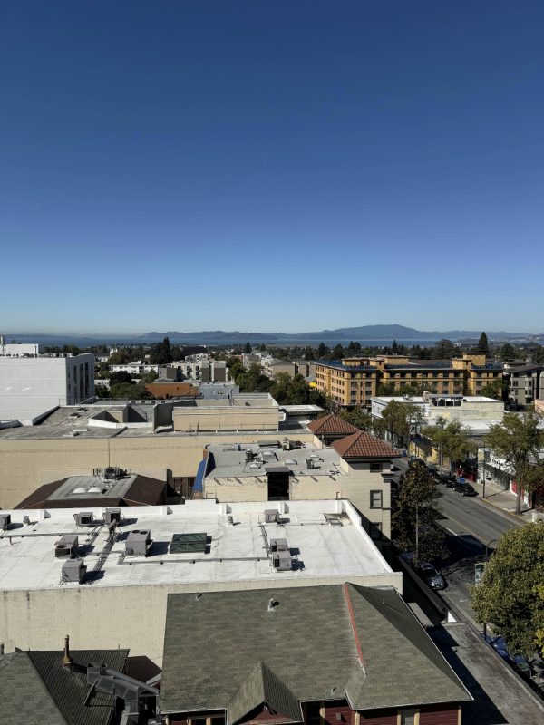
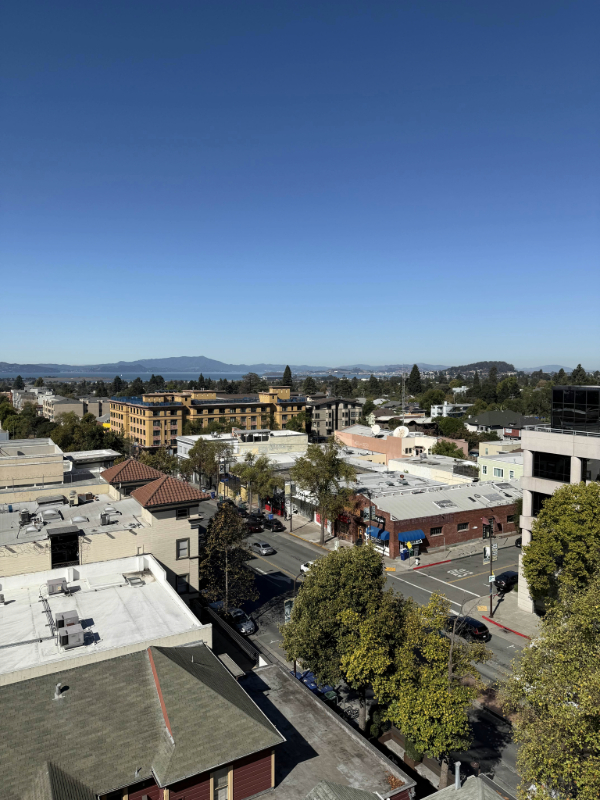
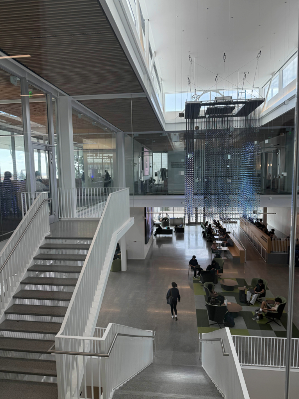
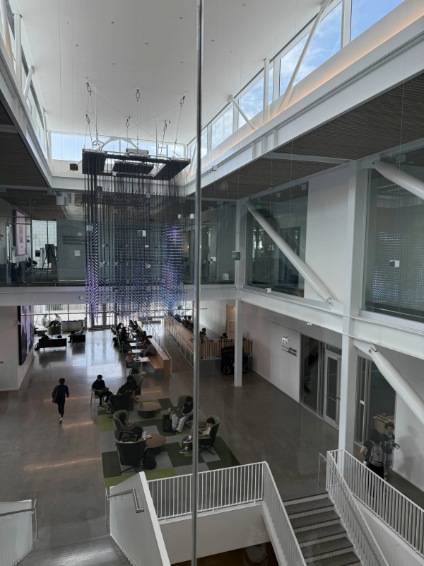
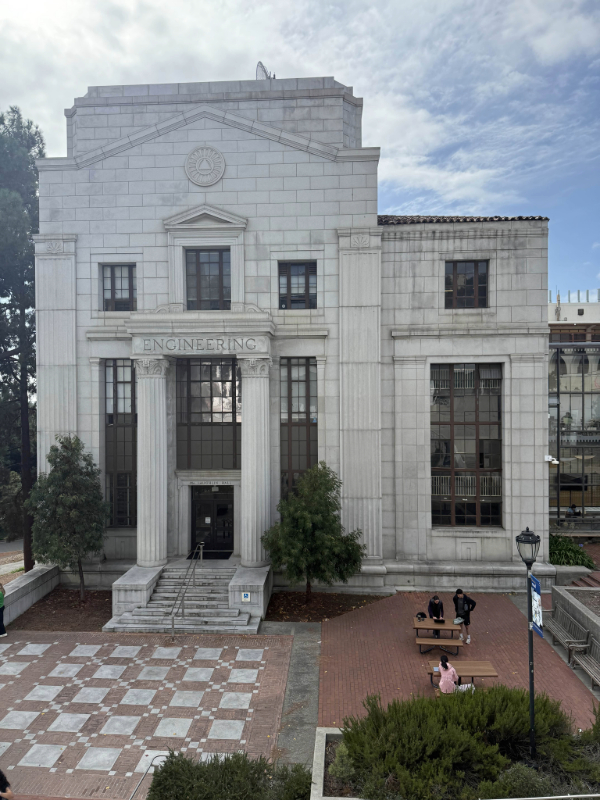
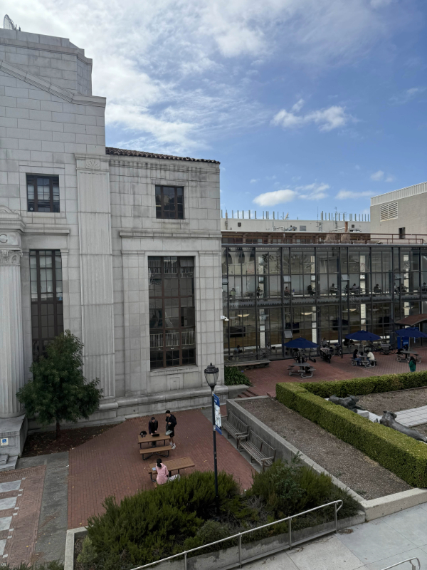
Each pair was taken with around 50% overlap for reliable point matching and homography recovery.
A.2. Recovering homographies
To compute the homography H between two images, we solve a linear system built from corresponding points (x, y) in image 1 and (u, v) in image 2. Each correspondence contributes two equations:
[x y 1 0 0 0 -ux -uy] [h1] [u]
[0 0 0 x y 1 -vx -vy] [h2] = [v]
[h3]
[h4]
[h5]
[h6]
[h7]
[h8]Stacking all correspondences yields an overdetermined system Ah = b, which is solved in the least-squares sense. The final 3×3 homography matrix is reconstructed by appending h9 = 1.
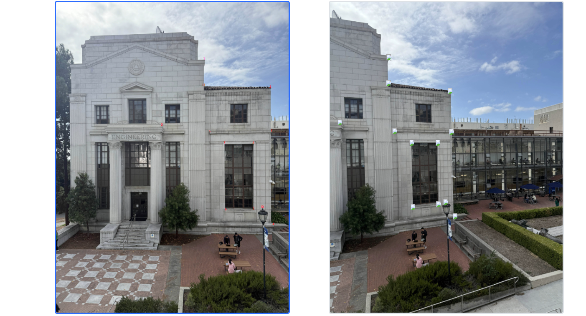
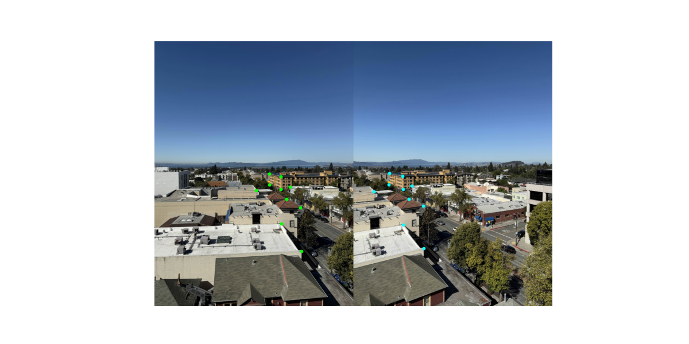
Implementation
def compute_H(im1_pts, im2_pts):
n = im1_pts.shape[0]
A = []
b = []
for i in range(n):
x, y = im1_pts[i]
u, v = im2_pts[i]
A.append([x, y, 1, 0, 0, 0, -u*x, -u*y])
A.append([0, 0, 0, x, y, 1, -v*x, -v*y])
b.append(u)
b.append(v)
A = np.array(A)
b = np.array(b)
H = np.linalg.lstsq(A, b)[0]
H = np.append(H, 1)
H = H.reshape((3, 3))
return H, A, bPanorama homography
[[ 1.59186937e+00 3.61721279e-02 -4.22912313e+02]
[ 2.28684629e-01 1.49595970e+00 -1.50886837e+02]
[ 7.10364295e-04 1.93061382e-04 1.00000000e+00]]Equations of the stacked system:
382.0 * h0 + 408.0 * h1 + 1.0 * h2 + 0.0 * h3 + 0.0 * h4 + 0.0 * h5 + -56536.0 * h6 + -60384.0 * h7 + = 148.0
0.0 * h0 + 0.0 * h1 + 0.0 * h2 + 382.0 * h3 + 408.0 * h4 + 1.0 * h5 + -155092.0 * h6 + -165648.0 * h7 + = 406.0
382.0 * h0 + 447.0 * h1 + 1.0 * h2 + 0.0 * h3 + 0.0 * h4 + 0.0 * h5 + -57300.0 * h6 + -67050.0 * h7 + = 150.0
0.0 * h0 + 0.0 * h1 + 0.0 * h2 + 382.0 * h3 + 447.0 * h4 + 1.0 * h5 + -170372.0 * h6 + -199362.0 * h7 + = 446.0
346.0 * h0 + 400.0 * h1 + 1.0 * h2 + 0.0 * h3 + 0.0 * h4 + 0.0 * h5 + -37368.0 * h6 + -43200.0 * h7 + = 108.0
0.0 * h0 + 0.0 * h1 + 0.0 * h2 + 346.0 * h3 + 400.0 * h4 + 1.0 * h5 + -137708.0 * h6 + -159200.0 * h7 + = 398.0
346.0 * h0 + 433.0 * h1 + 1.0 * h2 + 0.0 * h3 + 0.0 * h4 + 0.0 * h5 + -36676.0 * h6 + -45898.0 * h7 + = 106.0
0.0 * h0 + 0.0 * h1 + 0.0 * h2 + 346.0 * h3 + 433.0 * h4 + 1.0 * h5 + -149472.0 * h6 + -187056.0 * h7 + = 432.0
441.0 * h0 + 502.0 * h1 + 1.0 * h2 + 0.0 * h3 + 0.0 * h4 + 0.0 * h5 + -93051.0 * h6 + -105922.0 * h7 + = 211.0
0.0 * h0 + 0.0 * h1 + 0.0 * h2 + 441.0 * h3 + 502.0 * h4 + 1.0 * h5 + -219177.0 * h6 + -249494.0 * h7 + = 497.0
398.0 * h0 + 476.0 * h1 + 1.0 * h2 + 0.0 * h3 + 0.0 * h4 + 0.0 * h5 + -66466.0 * h6 + -79492.0 * h7 + = 167.0
0.0 * h0 + 0.0 * h1 + 0.0 * h2 + 398.0 * h3 + 476.0 * h4 + 1.0 * h5 + -189050.0 * h6 + -226100.0 * h7 + = 475.0
443.0 * h0 + 633.0 * h1 + 1.0 * h2 + 0.0 * h3 + 0.0 * h4 + 0.0 * h5 + -93916.0 * h6 + -134196.0 * h7 + = 212.0
0.0 * h0 + 0.0 * h1 + 0.0 * h2 + 443.0 * h3 + 633.0 * h4 + 1.0 * h5 + -276432.0 * h6 + -394992.0 * h7 + = 624.0
383.0 * h0 + 551.0 * h1 + 1.0 * h2 + 0.0 * h3 + 0.0 * h4 + 0.0 * h5 + -57450.0 * h6 + -82650.0 * h7 + = 150.0
0.0 * h0 + 0.0 * h1 + 0.0 * h2 + 383.0 * h3 + 551.0 * h4 + 1.0 * h5 + -211799.0 * h6 + -304703.0 * h7 + = 553.0
306.0 * h0 + 449.0 * h1 + 1.0 * h2 + 0.0 * h3 + 0.0 * h4 + 0.0 * h5 + -18972.0 * h6 + -27838.0 * h7 + = 62.0
0.0 * h0 + 0.0 * h1 + 0.0 * h2 + 306.0 * h3 + 449.0 * h4 + 1.0 * h5 + -138618.0 * h6 + -203397.0 * h7 + = 453.0
409.0 * h0 + 439.0 * h1 + 1.0 * h2 + 0.0 * h3 + 0.0 * h4 + 0.0 * h5 + -71984.0 * h6 + -77264.0 * h7 + = 176.0
0.0 * h0 + 0.0 * h1 + 0.0 * h2 + 409.0 * h3 + 439.0 * h4 + 1.0 * h5 + -177915.0 * h6 + -190965.0 * h7 + = 435.0Engineering homography
[[ 1.62486167e+00 2.23877645e-02 -4.10343843e+02]
[ 3.80771099e-01 1.41534178e+00 -1.60794393e+02]
[ 1.05300413e-03 -1.48710200e-05 1.00000000e+00]]Equations:
270.0 * h0 + 317.0 * h1 + 1.0 * h2 + 0.0 * h3 + 0.0 * h4 + 0.0 * h5 + -6750.0 * h6 + -7925.0 * h7 + = 25.0
0.0 * h0 + 0.0 * h1 + 0.0 * h2 + 270.0 * h3 + 317.0 * h4 + 1.0 * h5 + -82620.0 * h6 + -97002.0 * h7 + = 306.0
378.0 * h0 + 149.0 * h1 + 1.0 * h2 + 0.0 * h3 + 0.0 * h4 + 0.0 * h5 + -56700.0 * h6 + -22350.0 * h7 + = 150.0
0.0 * h0 + 0.0 * h1 + 0.0 * h2 + 378.0 * h3 + 149.0 * h4 + 1.0 * h5 + -52920.0 * h6 + -20860.0 * h7 + = 140.0
547.0 * h0 + 220.0 * h1 + 1.0 * h2 + 0.0 * h3 + 0.0 * h4 + 0.0 * h5 + -167382.0 * h6 + -67320.0 * h7 + = 306.0
0.0 * h0 + 0.0 * h1 + 0.0 * h2 + 547.0 * h3 + 220.0 * h4 + 1.0 * h5 + -123622.0 * h6 + -49720.0 * h7 + = 226.0
550.0 * h0 + 332.0 * h1 + 1.0 * h2 + 0.0 * h3 + 0.0 * h4 + 0.0 * h5 + -170500.0 * h6 + -102920.0 * h7 + = 310.0
0.0 * h0 + 0.0 * h1 + 0.0 * h2 + 550.0 * h3 + 332.0 * h4 + 1.0 * h5 + -182050.0 * h6 + -109892.0 * h7 + = 331.0
555.0 * h0 + 571.0 * h1 + 1.0 * h2 + 0.0 * h3 + 0.0 * h4 + 0.0 * h5 + -177045.0 * h6 + -182149.0 * h7 + = 319.0
0.0 * h0 + 0.0 * h1 + 0.0 * h2 + 555.0 * h3 + 571.0 * h4 + 1.0 * h5 + -303030.0 * h6 + -311766.0 * h7 + = 546.0
392.0 * h0 + 334.0 * h1 + 1.0 * h2 + 0.0 * h3 + 0.0 * h4 + 0.0 * h5 + -64680.0 * h6 + -55110.0 * h7 + = 165.0
0.0 * h0 + 0.0 * h1 + 0.0 * h2 + 392.0 * h3 + 334.0 * h4 + 1.0 * h5 + -128576.0 * h6 + -109552.0 * h7 + = 328.0
433.0 * h0 + 534.0 * h1 + 1.0 * h2 + 0.0 * h3 + 0.0 * h4 + 0.0 * h5 + -91363.0 * h6 + -112674.0 * h7 + = 211.0
0.0 * h0 + 0.0 * h1 + 0.0 * h2 + 433.0 * h3 + 534.0 * h4 + 1.0 * h5 + -226026.0 * h6 + -278748.0 * h7 + = 522.0
430.0 * h0 + 363.0 * h1 + 1.0 * h2 + 0.0 * h3 + 0.0 * h4 + 0.0 * h5 + -89440.0 * h6 + -75504.0 * h7 + = 208.0
0.0 * h0 + 0.0 * h1 + 0.0 * h2 + 430.0 * h3 + 363.0 * h4 + 1.0 * h5 + -153940.0 * h6 + -129954.0 * h7 + = 358.0
504.0 * h0 + 364.0 * h1 + 1.0 * h2 + 0.0 * h3 + 0.0 * h4 + 0.0 * h5 + -138600.0 * h6 + -100100.0 * h7 + = 275.0
0.0 * h0 + 0.0 * h1 + 0.0 * h2 + 504.0 * h3 + 364.0 * h4 + 1.0 * h5 + -180432.0 * h6 + -130312.0 * h7 + = 358.0
504.0 * h0 + 533.0 * h1 + 1.0 * h2 + 0.0 * h3 + 0.0 * h4 + 0.0 * h5 + -139608.0 * h6 + -147641.0 * h7 + = 277.0
0.0 * h0 + 0.0 * h1 + 0.0 * h2 + 504.0 * h3 + 533.0 * h4 + 1.0 * h5 + -259560.0 * h6 + -274495.0 * h7 + = 515.0
526.0 * h0 + 528.0 * h1 + 1.0 * h2 + 0.0 * h3 + 0.0 * h4 + 0.0 * h5 + -155170.0 * h6 + -155760.0 * h7 + = 295.0
0.0 * h0 + 0.0 * h1 + 0.0 * h2 + 526.0 * h3 + 528.0 * h4 + 1.0 * h5 + -268260.0 * h6 + -269280.0 * h7 + = 510.0
377.0 * h0 + 216.0 * h1 + 1.0 * h2 + 0.0 * h3 + 0.0 * h4 + 0.0 * h5 + -56173.0 * h6 + -32184.0 * h7 + = 149.0
0.0 * h0 + 0.0 * h1 + 0.0 * h2 + 377.0 * h3 + 216.0 * h4 + 1.0 * h5 + -77662.0 * h6 + -44496.0 * h7 + = 206.0Using more than four correspondences produced stable, low-error homographies suitable for accurate alignment.
A.3. Warping images
With the recovered homographies, I implemented inverse warping using both nearest-neighbor and bilinear interpolation.
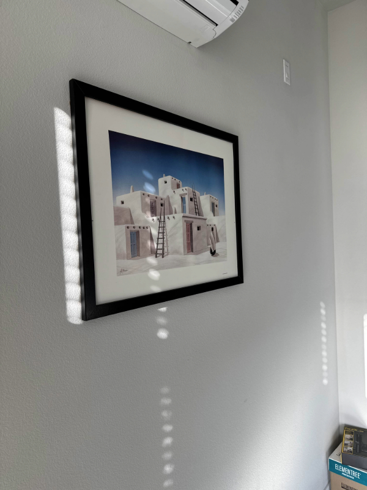
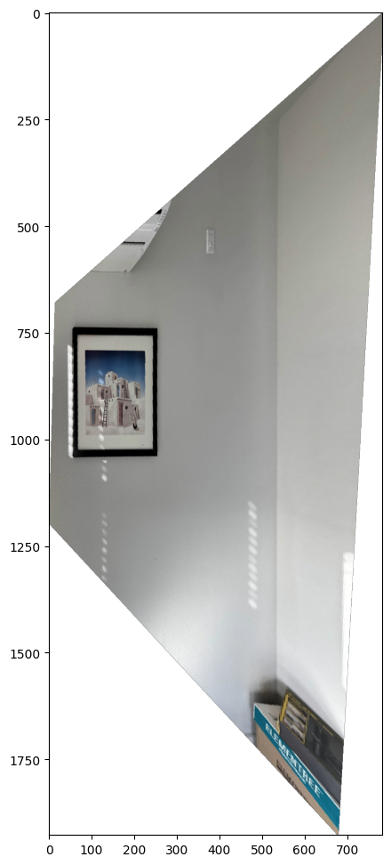
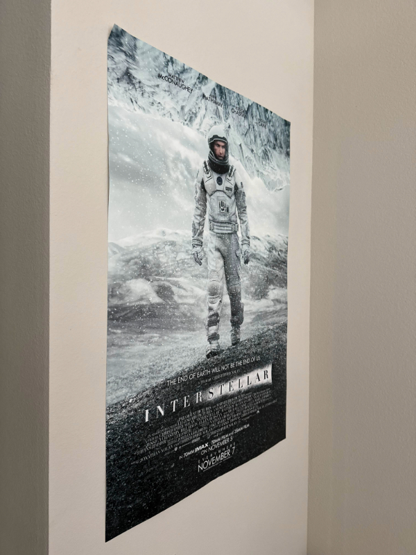
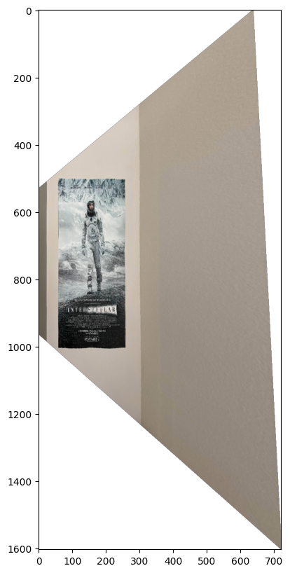
Bilinear interpolation yielded smoother results, while nearest neighbor was faster but more pixelated.
A.4. Creating the mosaic
The warped images were composited into mosaics using alpha-weighted blending with a feathered mask for each image's alpha.
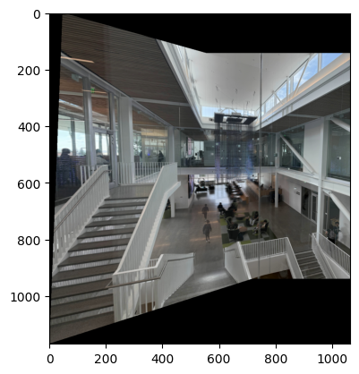
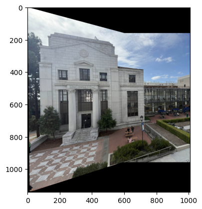
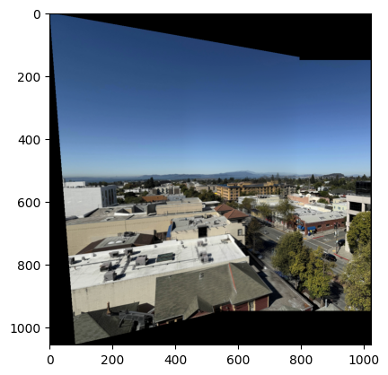
Method
The make_mosaic() function follows a multi-stage procedure to warp and blend two input images into a unified panorama:
- Homography estimation: the 3×3 matrix
His computed from corresponding feature points between the two images. It maps pixels from the first image into the coordinate system of the second. - Canvas determination: the warped corners of
im1and the original corners ofim2are combined to determine the overall mosaic bounds. The output canvas is sized to contain both. - Warping via bilinear interpolation: the first image is warped into the mosaic frame using inverse mapping and bilinear interpolation.
- Feather mask generation: a 2D alpha mask is created for each image with a falloff at the borders. The mask is near 1 in the center and decays to 0 near the edges, so overlapping regions fade naturally instead of forming sharp transitions.
- Compositing and alpha blending: both images are placed into the mosaic canvas.
- Final normalization: the accumulated weights are divided out at the end, leaving a smooth mosaic without visible seams or intensity jumps.
Edge feathering
The feather mask fades to 0 near the edges, with a default falloff distance of 20% of the way in from the edges.
B.1. Harris corner detection
The Harris corner detector identifies points of strong local intensity variation. Using the provided harris.py helper, I detected corners and visualized them on each input image.
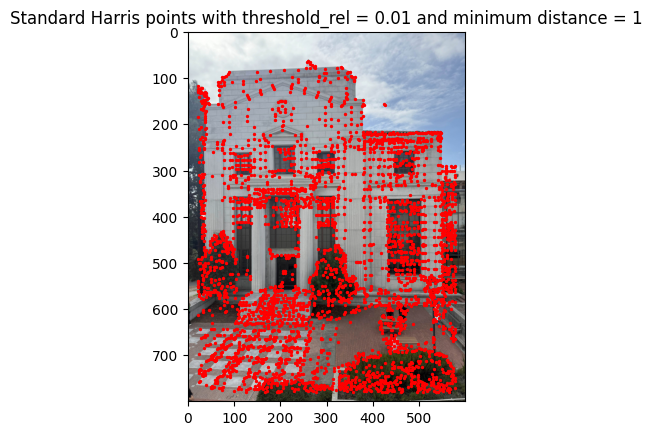
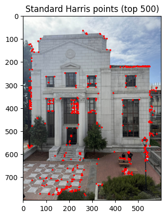
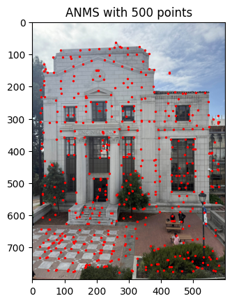
ANMS gives us strong corners, and also makes sure they are distributed well throughout the image.
B.2. Feature descriptor extraction
For each detected corner, I sampled a 40×40 window centered on the feature and downsampled it to an 8×8 descriptor. Each patch was bias/gain normalized to zero mean and unit variance, improving robustness to illumination changes.
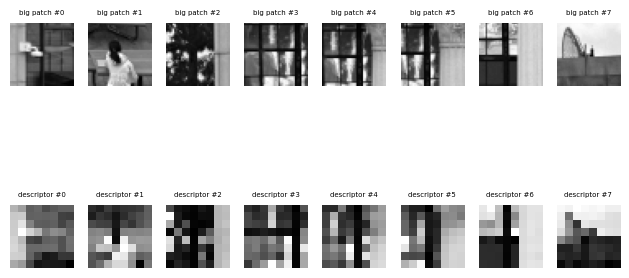
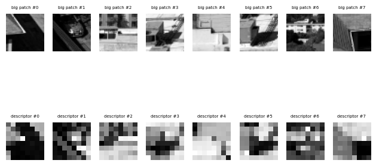
Descriptors were extracted without rotation invariance for simplicity, following Brown et al., 2005.
B.3. Feature matching
Descriptors between two images were matched using Lowe's ratio test. For each feature in image A, the nearest and second-nearest descriptors in image B were found; matches were kept if d1/d2 < 0.7, where d1 and d2 are the distances to the first and second nearest neighbors.
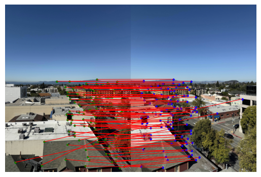
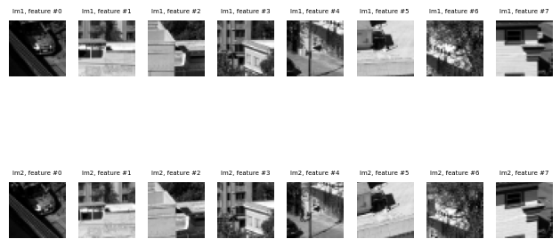
There are still mismatched features. This is taken care of in the next step, RANSAC. It is interesting how many of the matched feature patches were still matched despite slight rotations, such as patch 7. This is likely because of the blurring, which makes small rotations less noticeable in the calculations.
B.4. RANSAC for a robust homography
I implemented 4-point RANSAC to estimate homographies while rejecting outlier matches. At each iteration, a random 4-point subset generated a candidate H; inliers were counted by reprojection error under 3 px. The best-inlier model was then refined by least squares on the full inlier set.
Manual versus RANSAC stitching
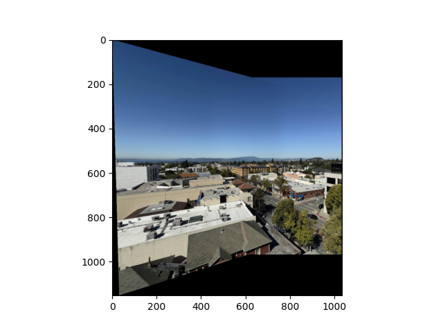
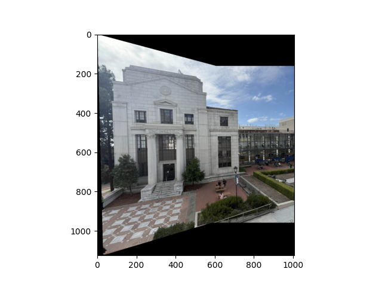
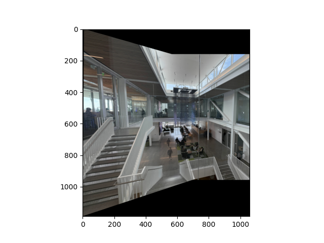
RANSAC reduced mismatches and produced nearly identical mosaics to manual point selection, validating the feature pipeline.
Conclusion
This project introduced planar homographies for geometric alignment and blending. Implementing inverse warping and interpolation from scratch deepened my understanding of projective transformations and compositing. Implementing ANMS, feature matching, and RANSAC gave me a deeper understanding of how automatic image stitching is done. Overall, a cool project to work on.
Thanks for viewing my project.